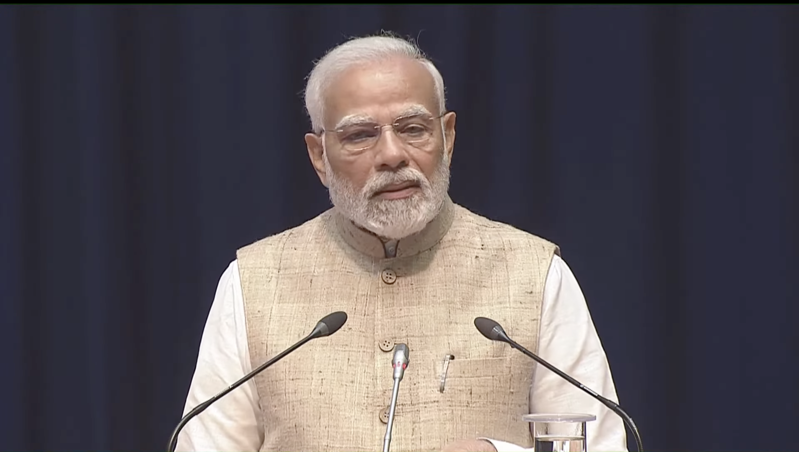

Kangana Ranaut slams Bollywood for silence on slap row, deletes post later
The Central Industrial Security Force (CISF) constable who allegedly slapped newly-elected Mandi MP and actor Kangana Ranaut at the Chandigarh airport for "disrespecting farmers" has been arrested, sources said on Friday.
A police case was filed against the accused constable, Kulwinder Kaur . In a video, recorded by onlookers at the airport, the Mandi MP can be seen escorted to the security checkpoint where the incident occurred. However, as she reaches the area, an argument breaks out and she is then escorted away. The video does not capture the alleged slap.
The actor faced online backlash in February 2021 after she responded to a post by singer Rihanna on the farmers' protest. "Why aren't we talking about this?", the pop icon said while sharing a video of the farmers protesting.
Ms Ranaut hit out at the post by labelling the protestors as "terrorists". "No one is talking about it because they are not farmers, they are terrorists who are trying to divide India, so that China can take over our vulnerable broken nation and make it a Chinese colony much like the USA. Sit down you fool, we are not selling our nation like you dummies," she said.
Cabinet secy reviews action plan to deal with heatwave and forest fire as temperature continues hovering over 45°C
Heatwave have been scorching the country since the middle of April beginning with eastern and southern parts and gradually spreading to northwest and central India. The temperature has been averaging in the range of 45-47°C.
According to the India Meteorological Department (IMD), on Wednesday, heat wave continued to slap some parts of southern Uttar Pradesh, Delhi and in isolated pockets of Haryana, north Madhya Pradesh and east Rajasthan. Heatwave conditions have been prevailing over Haryana since 17 May and over Madhya Pradesh and Uttar Pradesh since 18 May.
Maximum temperatures on Wednesday were in the range of 43-46°C -- 2-4°C above normal -- in many parts of Haryana, Delhi and at isolated pockets of north Rajasthan, northwest Madhya Pradesh and southern parts of Uttar Pradesh. Fatehpur in east Uttar Pradesh reported the highest maximum temperature of 46.2°C.
Modi claims victory in India’s election but drop in support forces him to rely on coalition partners
NEW DELHI (AP) — Prime Minister Narendra Modi declared victory for his alliance in India’s general election, claiming a mandate to move forward with his agenda, even though his party lost seats to a stronger than expected opposition, which pushed back against his mixed economic record and polarizing politics.
“Today’s victory is the victory of the world’s largest democracy,” Modi told the crowd at his party’s headquarters Tuesday, saying Indian voters had “shown immense faith” both in his party and his National Democratic Alliance coalition. Official results from India’s Election Commission on Wednesday showed the NDA won 294 seats, more than the 272 seats needed to secure a majority but far fewer than had been expected.
For the first time since his Hindu nationalist Bharatiya Janata Party swept to power in 2014, it did not secure a majority on its own, winning 240 seats — far fewer than the record 303 it won in the 2019 election.
That means Modi will need the support of other parties in his coalition — a stunning blow for the 73-year-old, who had hoped for a landslide victory. During campaigning, Modi said his party would likely win 370 seats and his allies another 30 seats.He now depends on the support of key allies, including the Telugu Desam Party in southern Andhra Pradesh state with 16 seats and Janata Dal (United), which won 12 seats in eastern Bihar state, as well as smaller groups.
“Indian voters can’t be taken for granted,” said the Times of India newspaper in an editorial. “Voters have clearly indicated that jobs and economic aspirations matter. The economic message from the results is that jobs matter.”
The Congress party won 99 seats, improving its tally from 52 in the 2019 elections. Among its key allies, Samajwadi Party won 37 seats in northern Uttar Pradesh state in a major upset for the BJP; All India Trinamool Congress bagged 29 seats in West Bengal state; and the Dravida Munnetra Kazhagam 22 seats in southern Tamil Nadu state.
The opposition INDIA coalition won a total of 232 seats.

India’s Modi elected as leader of coalition and set to form new government.
The BJP may now be “heavily dependent on the goodwill of its allies, which makes them critical players who we can expect will extract their pound of flesh, both in terms of policymaking as well as government formation,” said Milan Vaishnav, director of the South Asia Program at the Carnegie Endowment for International Peace.
“At the very least, the result pricks the bubble Prime Minister Modi’s authority. He made this election about himself,” said Pratap Bhanu Mehta, a political commentator. “Today, he is just another politician, cut to size by the people”. More than 640 million votes were cast in the marathon election held over a span of six weeks in the world’s largest democratic exercise.
In the face of the surprising drop in the BJP’s support, challengers claimed they had also won a victory of sorts, with the main opposition Congress party saying the election had been a “moral and political loss” for Modi.
“This is public’s victory and a win for democracy,” Congress party President Mallikarjun Kharge told reporters.

New Delhi: Amid allegations of irregularities in the marking process, the Ministry of Education has constituted a four-member high-powered committee to look into the issue of grace marks being awarded to more than 1,500 of the 23 lakh candidates who appeared for the National Eligibility cum Entrance Test (NEET-UG 2024) in May this year.
The announcement was made at a press conference here by Subodh Kumar Singh, director general of the National Testing Agency (NTA), which administers the pre-medical test.
Since the NEET-UG 2024 results were declared on 4 June, several students have flagged what they termed gross discrepancies in this year’s results which led to 67 students sharing the top rank, including six from the same exam centre in Haryana.
He added that of the 4,750 exam centres, issues were limited to only six. These included exam centres in Meghalaya, Chandigarh, Surat, and Chhattisgarh.
He also denied allegations that NEET-UG question papers were leaked.
“We denied reports on 6 May that the paper had been leaked. Integrity of the examination was not compromised at all. Only one question affected (the students) this time. So many questions are prepared, out of 1,563 students who were reassessed, 790 students qualified. Thirteen lakh students overall qualified. Those who have been compensated with grace marks have not affected the overall percentage of marks,” he said.
Moreover, he said that based on time lost and wrong answers, grace marks were given to students but that the grace marks were separate for each student. “This depends on the overall performance of students in the examination,” he added. The NTA has been trying to strengthen NEET protocols to ensure that the issue is not repeated, said Singh.
This year, NEET was conducted on 5 May across 571 cities in India and 14 centres abroad.